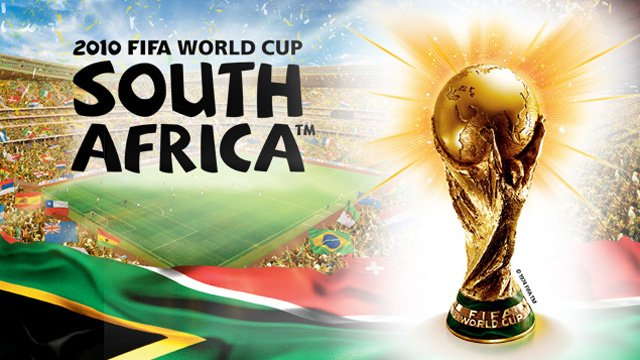

España llegaba al Mundial de Sudáfrica 2010 como reciente campeona de Europa
y con una generación de futbolistas que estaban llamados a ganar el primer campeonato del mundo para La Roja.
Con el tiki-taka por bandera, Vicente del Bosque y sus 23 elegidos viajaron a Sudáfrica con la ilusión de hacer historia ...

La Copa Mundial de la FIFA Sudáfrica 2010 (en inglés y afrikáans, respectivamente: 2010 FIFA World Cup y FIFA Sokker-Wêreldbekertoernooi in 2010) fue la XIX edición de la Copa Mundial de Fútbol. La competición se celebró en Sudáfrica, entre el 11 de junio y el 11 de julio de ese año, siendo la primera vez que el torneo se disputaba en África y la quinta que lo hacía en el hemisferio sur, superando el país anfitrión en la elección previa a Egipto y Marruecos.
GRUPOS
Grupo A
Uruguay 7 pts
México 4 pts
Sudáfrica 4 pts
Francia 1 pts
Grupo C
Estados Unidos 5 pts
Inglaterra 5 pts
Eslovenia 4 pts
Argelia 1 pts
Grupo E
Países Bajos 9 pts
Japón 6 pts
Dinamarca 3 pts
Camerún 0 pts
Grupo G
Brasil 7 pts
Portugal 5 pts
Costa de Marfil 4 pts
RPD Corea 0 pts
Grupo B
Argentina 9 pts
República de Corea 4 pts
Grecia 3 pts
Nigeria 1 pts
Grupo D
Alemania 6 pts
Ghana 4 pts
Australia 4 pts
Serbia 3 pts
Grupo F
Paraguay 5 pts
Eslovaquia 4 pts
Nueva Zelanda 3 pts
Italia 2 pts
Grupo H
España 6 pts
Chile 6 pts
Suiza 4 pts
Honduras 1 pts
Paso de España por la fase de grupos
España que llegaba como vigente campeona de europa se la pegó en su debut contra Suiza. Los de Vicente del Bosque se estrellaron contra el muro helvético que aprovechó la única oportunidad que tuvo en todo el partido. Villa recondujo a la roja con un doblete ante Honduras y pese a fallar un penalti, el delantero también abrió la cuenta en la victoria ante Chile que servía a amabas selecciones para seguir adelante en el torneo.
OCTAVOS DE FINAL
España vs Portugal
En octavos de final España se media a una Portugal muy defensiva, las paradas de Eduardo frustraron a Vicente del Bosque que dió entrada a Fernando Llorente para inquietar a los lusos, David Villa marcó el único gol del partido tras culminar una gran jugada colectiva. Cristiano Ronaldo y Portugal se despedían de la copa del mundo.
Uruguay vs Corea del Sur
Uruguay recurrió a Luis Suarez para vencer 2-1 a una correosa Corea del Sur.
Ghana vs Estados Unidos
Ghana daba la sorpresa y eleminaba por sorpresa a Estados Unidos con un gol en la prórroga.
Alemania vs Inglaterra
En Blomefontein Alemania goleó a Inglaterra por 4-1, Klose y Podolski encarrilaron el partido con dos goles en la primera media hora. Pero Inglaterra recortó distancias con un cabezazo de Upson y debió empatar con un remate de Lampard que superó claramente la linea de gol, el tanto no subió al marcador y alemania sentenció con dos goles de Müller en el segundo tiempo.
Argentina vs México
Argentina se puso por delante en el marcador con polémica ante México, Tevez abrió la cuenta con un gol en fuera de juego e Higuaín marcaba el segundo antes del descanso. Carlos Tevez volvía a marcar en la reanudación para certificar el pase de la albiceleste a cuartos de final.
Países Bajos vs Eslovaquia
Robben y Sneijder se bastaron para eliminar a Eslovaquia.
Brasil vs Chile
Chile no puso resistencia y fue superada con un 3-0, los goles de Juan, Luis Fabiano y Robinho metían a la caraninha en la siguiente ronda.
Praguay vs Japón
En Pretoria, Japón y Praguay fueron incapaces de marcar y se jugaron el pase a cuartos en los penaltis. Los guaraníes no fallaron nigún lanzamiento y conseguían clasificarse a cuartos por primera vez en su historia.
CUARTOS DE FINAL
España vs Paraguay
Los sudamericanos se enfrentaban a España a la que desactivaron durante la primera parte, Paraguay debió irse con ventaja pero el árbitro anulo un gol legal Valdez. En la segunda parte los paraguayos dispusieron de un penalti a favor pero Casillas adivinó el lanzamiento de Cardozo, un minuto después el penalti fue para España, Xabi Alonso marcó pero el colegiado lo anuló por invasión de área. Villar rechazó el segundo lanzamiendo pero España se reactivó con la entrada de Pedro y acabó marcando tras una jugada llena de carambolas. España pasaba la barrera de cuartos con sufrimiento y con otro gol de David Villa.
Países Bajos vs Brasil
Brasil comenzó marcando frente a Holanda a los 10 minutos pero acabaría cediendo en la segunda mitad. Sneijder empataba con la colaboración de Felipe Melo y culminaba la remontada con un remate de cabeza, la autoexpulsión de Melo restó opciones a los de Dunga que quedaban eliminados antes de lo esperado.
Argentina vs Alemania
En ciudad del Cabo, Alemania no dió opciones a Argentina. Thomas Müller marcó el primer gol en el minuto 3 y Alemania puso el rodillo en la segunda mitad, un doblete de Klose y otro gol de Friedrich en los últimos 20 minutos cerraron la goleada de alemania por 4 a 0. La Argentina de Maradona y Messi se despedian del mundial.
En Johannesburgo, Muntari y Forlán pusieron los golazos a un partido que se pudo decidir con un penalti en el último minuto de la prórroga. Luis Suarez emuló la mano de dios y salvó un gol bajo los palos que le costó la expulsión. Asamoah Gyan pudó meter a Ghana en semifinales pero su zurdazo se estrello con el travesaño. El ganador se resolvió en la tanda de penatis tras un gol a lo panenka de Sebastian Adreu.
SEMIFINAL
Uruguay vs Países Bajos
Sin Suarez por sanción Uruguay comenzó perdiendo ante Holanda. Van Bronckhorst marcaba un golazo el minuto 18 aunque Forlán empataba antes del descanso. Quedaban 20 minutos para el final cuando aparecieron los dos referentes tulipanes. Sneijder y Robben marcaron en tres minutos y aseguraron la presencia de Países Bajos en la gran final.
Alemania vs España
En Durban Alemania y España se enfrentaron con novedades en los onces, Joaquim Löw tenía la baja de Müller por sanción mientras que del Bosque sorprendía dando la alternativa Pedro. El canario estuvo muy activo y se hizo notar en una primera parte de dominio español. Pero el gol de España no llegó hasta la segunda parte medinate un córner botado por Xavi y Puyol remató de cabeza pra meter a España en la final. Los germanos volvían a jugar la final de consolación y se colgaron la medalla de bronce al ganar a Uruguay por 3-2.
FINAL: ESPAÑA VS PAISES BAJOS
La final de Johannesburgo sería historica para el ganador, Holanda o España levantarían su primera copa del mundo en Sudáfrica. España trató de ser fiel a su estilo y comenzó acosando la porteria de los holandeses, Sergio Ramos y Villa tuvieron tres ocasiones en los primeros 10 minutos. Pero Holanda se defendió a base de patadas y con entradas intimidantes de Van Bommel y De Jong, la permisibilidad de Howard Webb hizo que Holanda se creciera antes del descanso al que se llegó sin goles. En la segunda mitad Robben tuvo la ocasión mas clara del partido pero su remate fue salvado milagrosamente por Casillas. Tras el susto España se repuso y estuvo a punto de marcar en las botas de Villa y en la cabeza de Ramos. El partido estaba roto y la velocidad de Robben volvía amenazar a Casillas. Pero ya no quedaba tiempo para más y se llegaba a la prórroga con empate a cero en el marcador. Nada más comenzar el tiempo suplemnetario Cesc Fábregas estuvo a punto de marcar, la parada de Stekelenburg dió vida a Holanda que se dedicó a defender para tratar de llegar a los penaltis. Heitinga fue expulsado en el minuto 108 y España encontró por fin el camino al gol en el minuto 116 ...
Iniesta bordó la estrella en la camiseta de la selección y España conquistaba, hasta la fecha, su única copa del mundo.